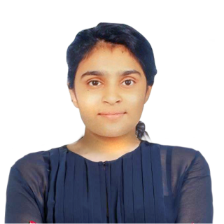
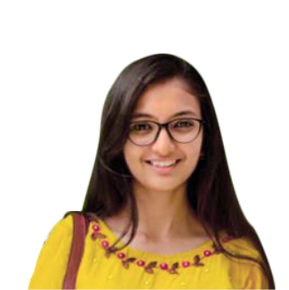
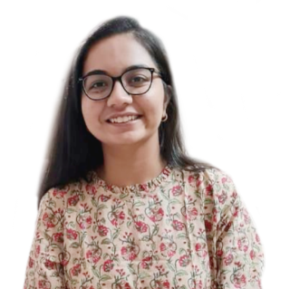
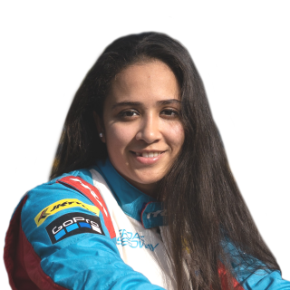
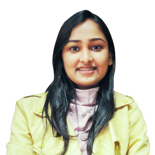
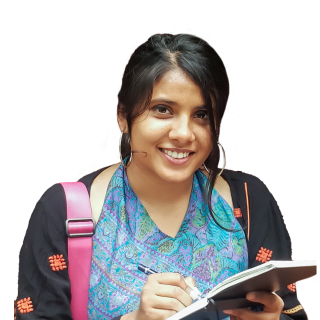

The School of Engineering and Technology (SET) with
its holistic approach, industry-experienced faculty and state-of-the-art labs, equips students to lead that
change.
International and industry collaborations, as well as the importance given to compulsory internships and
project-based learning, help the students match pace with the constantly changing narratives and create
problem-solving leaders.


When I had conversations with my seniors they suggested Navrachana University. And after I joined, I felt I made the right choice. It is really awesome - from the campus to the faculty, to all the events being organised, making it a perfect place for holistic learning. We get the opportunity to take interdisciplinary courses as well which further enhances our knowledge and skill set.
 Hitakshi Chugh BSc - Data ScienceOur course is very well designed, making it easy to understand. The real-time project scenarios and the assignments make the course more robust. The faculty are technically very sound in their field and the excellent course content covers all aspects of the subject. It encapsulates enough activities to challenge students to think differently and engage with industry.
Ishan Shinde MTech - Thermal & Fluid EngineeringWith its innovative programs and outstanding faculty
members who have extensive real-world industry experience, the School of Business and Law, Navrachana
University, is one of Gujarat's premier institutes committed to creating confident business leaders.
Working in close association with industrial and academic experts, the School of Business and Law offers
several unique undergraduate and postgraduate programs in the field of Management (BBA, MBA) and Law (BBA-LLB
Integrated and LLM).


MBA at NUV has helped me explore my inner potential and passion, which has tremendously helped in the effective development of my existing leadership and interpersonal skills. The School of Business & Law helps us prepare ourselves for the corporate world by providing a complete package of constant emphasis on current events, curricular, co-curricular, extra-curricular activities and arranging informative guest lectures to enhance the real-world skills needed for interfacing with the industry.
 Romit Patel
MBA
Romit Patel
MBA
Being part of NUV was like being part of a progressive learning community. BBA at Navrachana University is not just about getting a degree but it teaches us to beat the competition, become the leader, and acquire the skills to be what you want to be.
 Heta Shah BBAThe School of Science at Navrachana University focuses on in-depth scientific inquiries that delve into theory and push the frontiers of science to shape the future. The programs are designed to bridge the gap between the student's aspirations and industry expectations. Working in close association with industrial and academic experts, the School offers several unique undergraduate and postgraduate programs in the field of Science, with degrees in BSc (Chemistry, Microbiology & Life Sciences), Integrated BSc-MSc (Biomedical Science), and MSc (Chemistry, Microbiology, Life Science and Clinical Embryology)


I started my career journey with Navrachana University in 2018 by pursuing BIOMEDICAL SCIENCES (BMS) which is BSc-MSc integrated course entailing genetics, molecular biology, clinical biochemistry, immunology, cell biology and biotechnology. This is a highly research oriented program with good labs and technology focusing on practical and lab oriented skill development. Highly qualified and trained faculty members along with supporting staff form an integral part of this course.
Prince Upadhyay BMSThe holistic approach of Biomedical Science course at NUV helps students to combine our classroom learning with concrete practical skills providing a strong foundation in science. The course nudges us in a direction to explore emerging technologies and advancements in fields like Genetics, Cell Biology and Reproductive Biomedicine. The course gives several opportunities to get involved in various international conferences, symposiums and field visits. The study module encourages us to understand the complexity of every living creature. One of the best things about the curriculum, is the diligent and dedicated faculty. Even during one of the most difficult times of pandemic, the university and teachers had made sure that our learning is not disrupted and we gather as much as possible.
 Kashyapi Joshipura BMSThe School of Liberal Studies & Education at
Navrachana University takes an interdisciplinary approach to learning and through its varied course offerings
prepares students to succeed in media organisations, academic institutions, or work in the development sector
with rural non-profits or international agencies.
Working in close association with the industry, and led by industry-experienced faculty members, it is one of
the premium institutes in Gujarat. The School of Liberal Studies & Education offers programs in Journalism and
Mass Communication (BAJMC), Social Work (MSW) and Education (BEd, MEd, PhD, PGD ECCE).


In my 3 years of studying in the BAJMC program, I have learnt a lot and got practical experience in my desired areas like television, videography, short films and other fields. At the same time, I also gained theoretical knowledge about media. With my continuous racing I was still able to manage my college studies and improve in my academics.
 Mira Erda BAJMCNUV's environment is sociable, right from the supporting faculty to excellent pedagogy, while offering best on-campus infrastructure and wide range of placements. Specifically, the MSW program allows you the freedom to think of an idea and test its practical application. I also gained tremendous knowledge about varied facets of social work.
Yashraj Parmar MSWSEDA's dynamic and challenging curriculum is led by
the school's highly accomplished faculty and guest lecturers, who are also working professionals and experts
in their field of specialization. Student's creativity and critical thinking capabilities are enriched through
extensive design investigations and explorations, to not just expand their knowledge, but also to confront the
complexities of the modern built environment.
The Bachelor's in Architecture and Design (Interior/ Landscape) are broad-based degree programs combining
technology, theory and design. Students work on a range of different design projects, with studio sessions and
study tours facilitating design dialogue and cross pollination of ideas amongst peers and faculty.


SEDA is where the learning begins. This is where you find yourself, a friendly atmosphere and a happy moment. From discovering new ideas to focusing on the details helped me grow every day. I am filled with joy and gratitude with my journey.
 Chaheti Vohra BDesignIn SEDA, I learnt to ' think' about designing first, followed by the act of it. The consciously curated curriculum exposed me to various methodologies in thinking, as well as approaches to orient my thinking towards design. I learned about myself and my deeper inclination towards psychology and its interrelation with the built environment. SEDA gave me an opportunity to explore this inquiry in the form of a research based thesis focusing on people having autism and other mental health conditions. This opportunity shaped my trajectory and landed me the Anant Fellowship on a full scholarship to further understand various nuances to this.
 Shivani Shah BArch